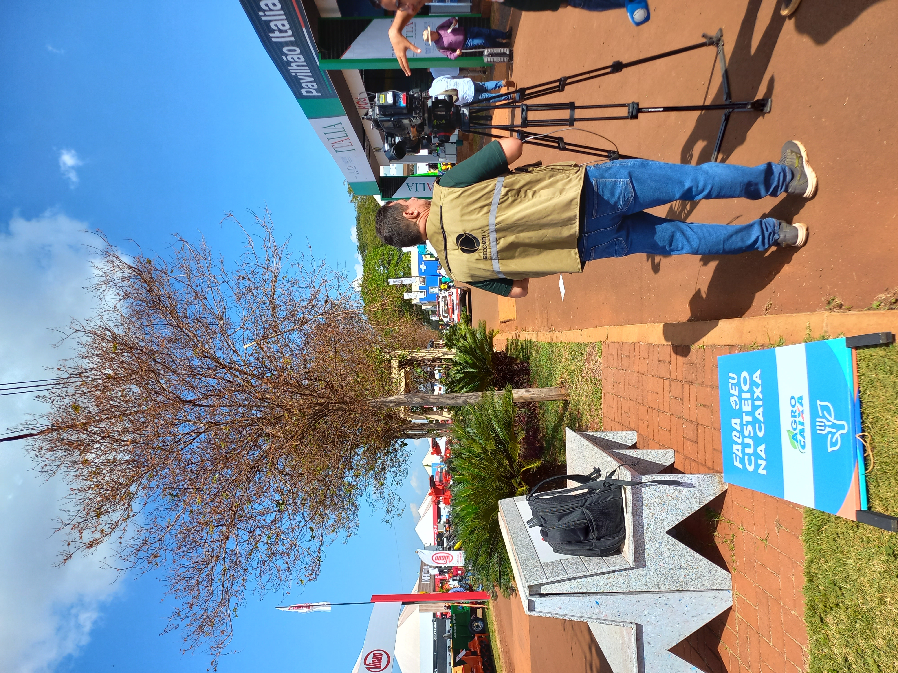
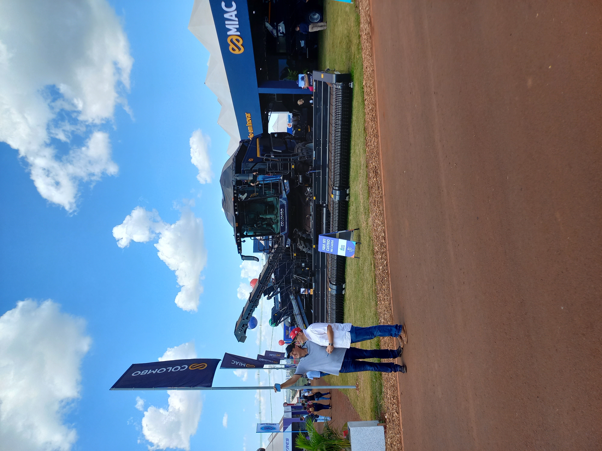
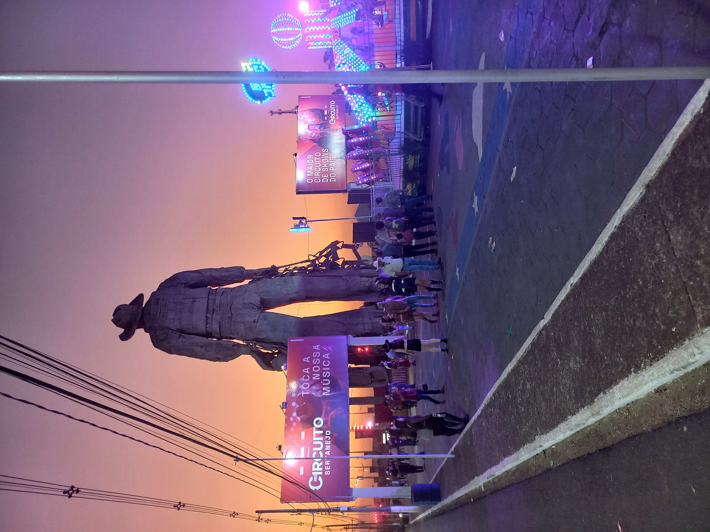
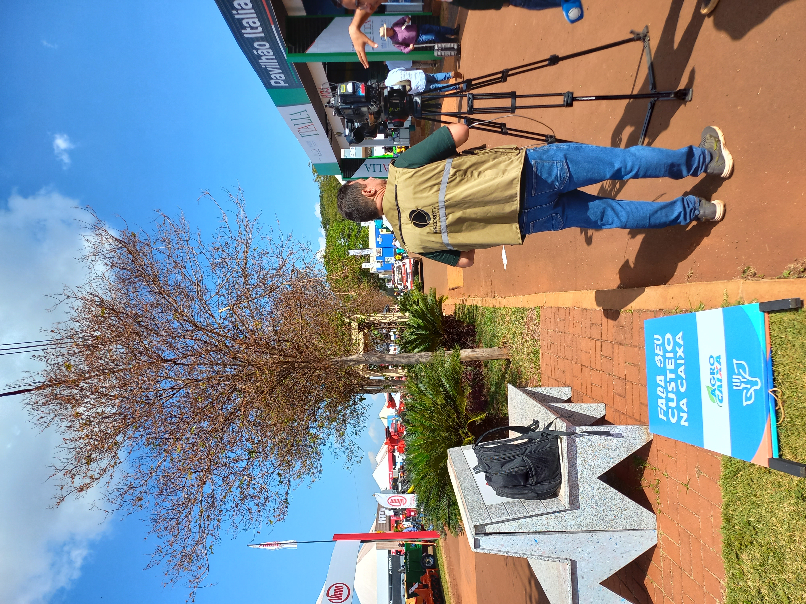
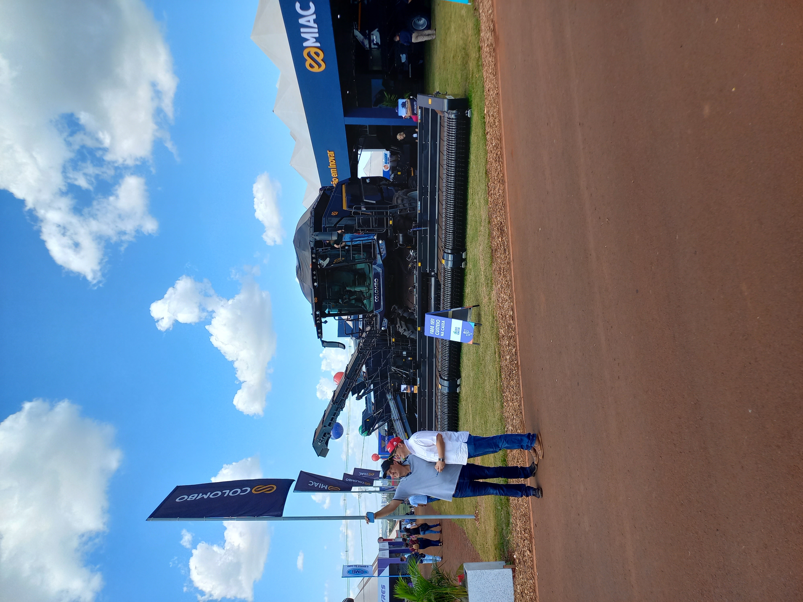
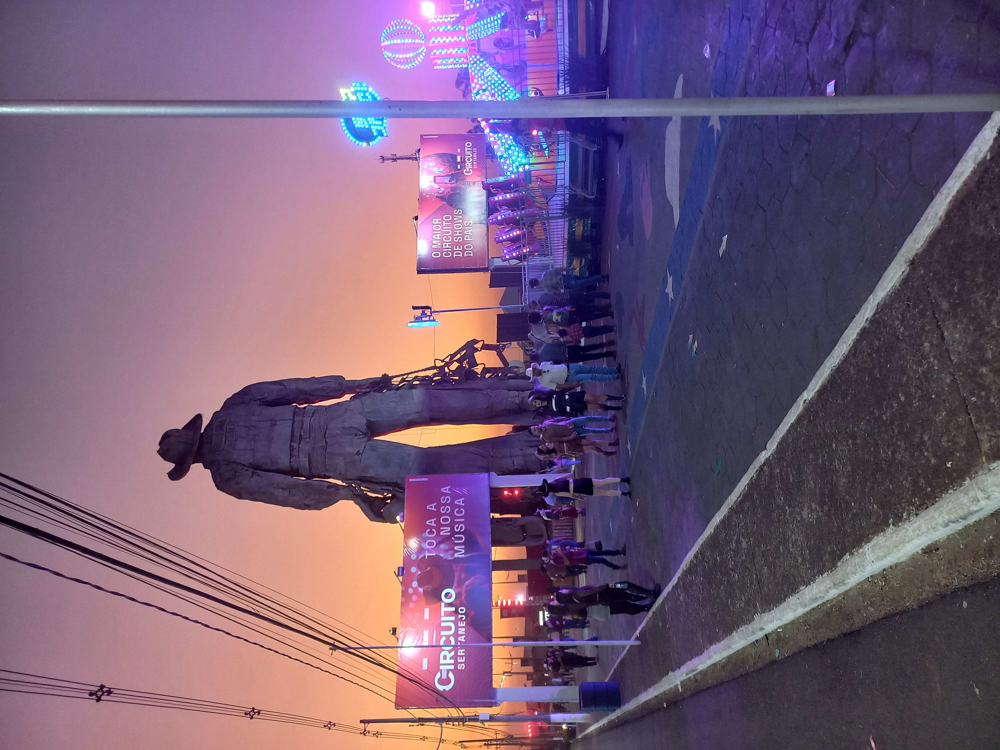

Recortes visuais do trabalho de campo (2024–2026)
Pesquisadores: Olívia Barbosa (Cebrap/Nonreligion in a Complex Future), Dirceu André Gerardi (FGV), Renata Nagamine (Cebrap), Aramis Luis Silva (Cebrap), Gustavo Aires Tiago (ONU-Habitat), Lila Zatoni (USP)
Pesquisador colaborador: Rafael Chiaravalotti (UCL, London)
Coordenação: Renata Nagamine (Cebrap)
Duração inicial: janeiro de 2024 a março de 2026
Nesta pesquisa, partimos do pressuposto de que na última década o agro e autodeclarados cristãos se conectaram de diferentes maneiras no Brasil. No Congresso, formaram uma coalizão que, vista de fora, parece tender à estabilidade. Isso também se aplica a pessoas que se autodeclaram cristãs nos espaços do agro?
Para responder a pergunta, usaremos técnicas de pesquisa da Ciência de Dados, que nos possibilitarão apresentar graficamente as fronteiras religiosa e agro no Brasil. Também usaremos técnicas de pesquisa das Ciências Sociais. Faremos pesquisa de campo no que Matias de Alencastro chamou de Mega Centro-Oeste. Iremos a feiras agropecuárias e rodeios no Centro-Oeste e Sudeste. Percorrendo parte do Centro-Oeste e do Nordeste de carro, visitaremos ainda fazendas, empresas, revendas e igrejas em cidades da Bahia, do Maranhão, do Pará e do Tocantins.
Malafaia enlaçou direito e religião ao lado de Bolsonaro, por Renata Nagamine e Aramis Luis Silva (fevereiro de 2024)
Lula à espera de um milagre, por Renata Nagamine e Aramis Luis Silva (abril de 2024)
No Brasil, abrir igreja é fazer um país, por Renata Nagamine e Aramis Luis Silva (abril de 2024)
Um evangelista em Barretos, por Renata Nagamine e Aramis Luis Silva (agosto de 2024)